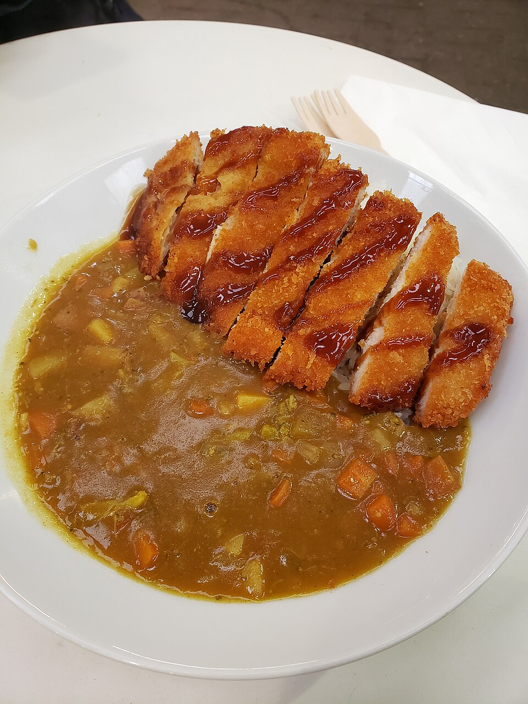

Home
Japanese Chicken Katsu Curry
Description: A crispy, goldern-brown panko-breaded chicken
cutlet served over a bed of warm short-grain rice and
smothered in a rich, savory, and slightly sweet curry gravy.

"Chicken Katsu Curry rice" by Andy Li
Servings: 4
Ingredients:
- 1/2 packet House Vermont Curry (Mild)
- .6 lb potatoes
- 3.5 oz carrots
- 1 tbsp oil
- 1.7pt water
- 4 cups cooked rice
- 4 Chicken Cutlets (recipe)
Prep:
- Peel russet potatoes into bite size cubes. toss in ice water
to remove some of its starchiness
- Peel and slice carrots into 1/4" slices
- Peel and slice onions into 1/4" slices
Cook:
- Add oil to a pot and heat over medium high heat.
- Add onion and saute for a few mintues or until becomes translucent
and edges start browning
- Add potatoes and carrots into the pot and stir for a couple minutes
- Add water and turn the heat up to bring to a boil. Then reduce heat
to a medium low and simmer for about 7 min or until vegetables are nearly cooked through
- Break the curry rouc cake into small blocks along the lines and add them to the pot.
Stir gently to blend the curry roux.
- Reduce heat to low, place lid on and cook for about 10 min or until curry roux is
completely dissolved. Stir occasionally so curry dosent stick to the bottom of the pan.
- Check consistency of the sauce. if it's too thick, adjust with some water.
If too thin, cook further without lid. Will thicken when cooled down as well.
- In a plate add a serving of rice to once side and chicken cutlents leaning next to rice.
And serve curry on other side.